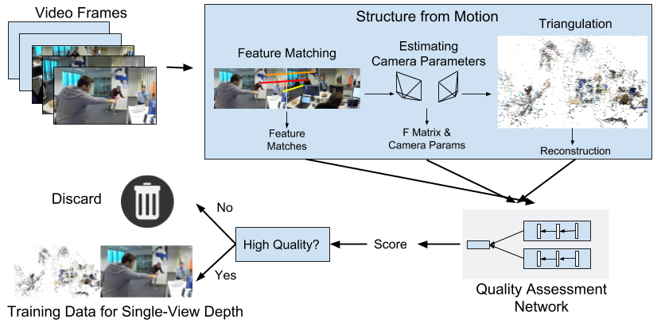
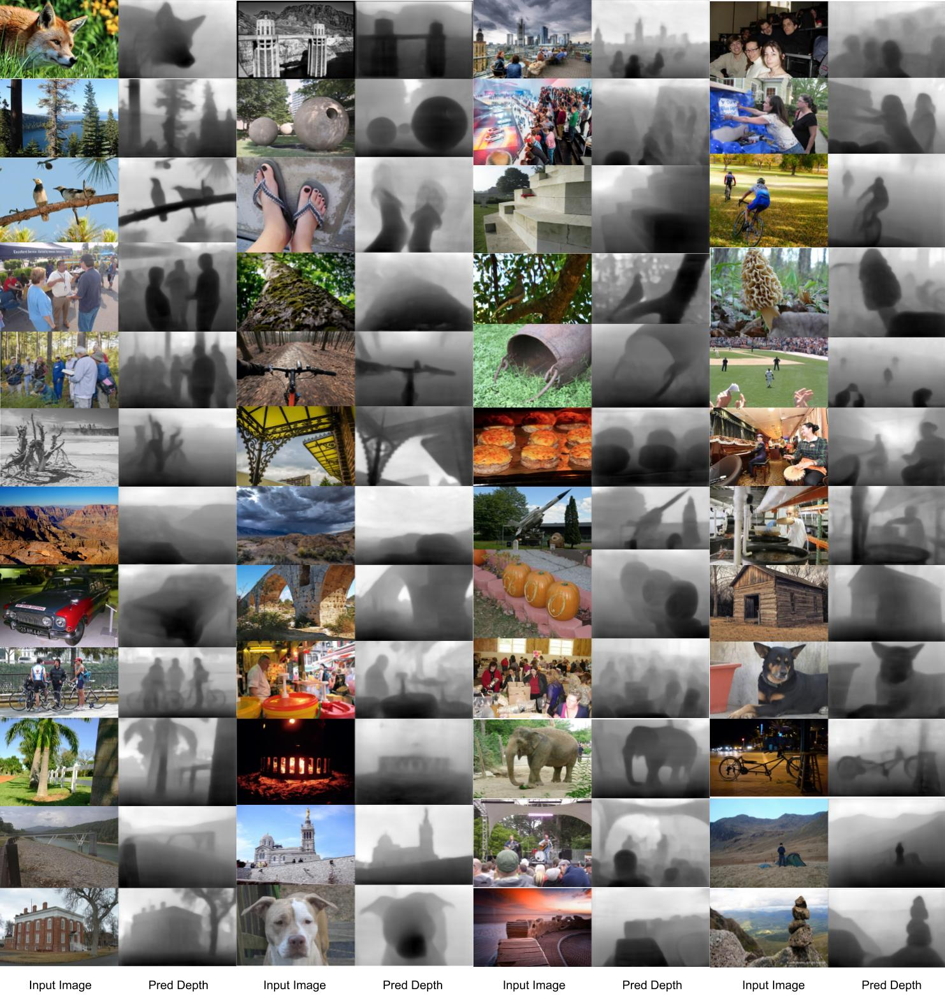

|
Figure 1: An overview of our data collection method. Given an arbitrary video, we follow standard steps of structure-from-motion: extracting feature points and matching them across frames, estimating the camera parameters, and performing triangulation to obtain a reconstruction. A Quality Assessment Network (QANet) examines the operation of the SfM pipeline and assigns a score to the reconstruction. If the score is above a certain threshold, this reconstruction is deemed of high quality, and we use it as single-view depth training data. Otherwise, the reconstruction is discarded.
AbstractDepth estimation from a single image in the wild remains a challenging problem. One main obstacle is the lack of high-quality training data for images in the wild. In this paper we propose a method to automatically generate such data through Structure-from-Motion (SfM) on Internet videos. The core of this method is a Quality Assessment Network that identifies high-quality reconstructions obtained from SfM. Using this method, we collect single-view depth training data from a large number of YouTube videos and construct a new dataset called YouTube3D. Experiments show that YouTube3D is useful in training depth estimation networks and advances the state of the art of single-view depth estimation in the wild.Publication
Qualitative Results
|